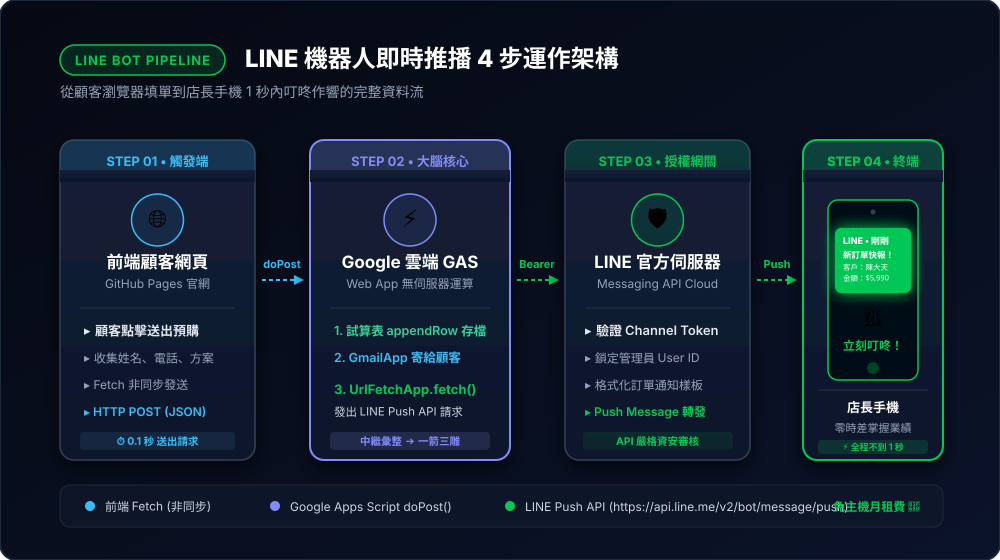
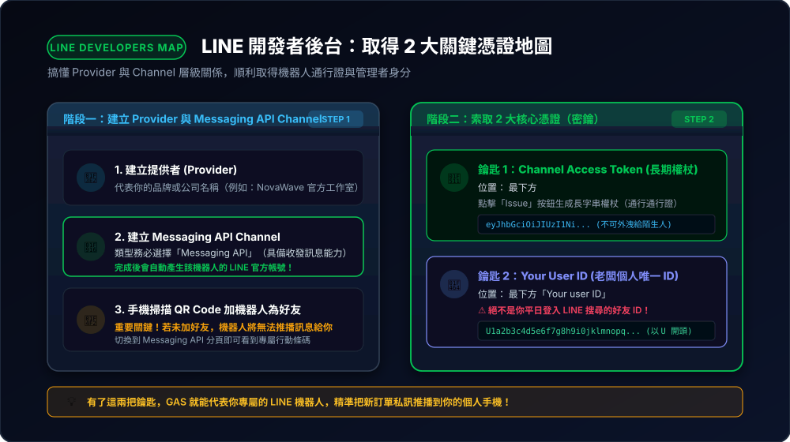

串接 LINE 機器人：即時通知老闆有人預購耳機！
在第 6 章中，客人填完單已經會自動寫入試算表並收到感謝信。但身為店長/老闆的你，總不能 24 小時盯著 Google 試算表格子看！本章將帶你串接 LINE 機器人，只要有新訂單進來，你的手機 LINE 立刻「叮咚！」收到老闆專屬推播！
7-1 作動原理剖析：LINE 機器人是如何在背後運作的？

前端送單 ➔ Google GAS 中繼處理 ➔ LINE Messaging API 授權轉發 ➔ 店長手機 1 秒內叮咚作響。
很多學員會好奇：「我只是在網頁上點一下送出，為什麼我的手機 LINE 能夠在 1 秒內收到訊息？這中間的訊號是怎麼傳遞的？」
在寫程式前，我們先用一張白話架構圖搞懂「網頁 ➔ Google 雲端 ➔ LINE 伺服器 ➔ 老闆手機」的四步推播骨牌效應：
🔄 系統作動四步全流程：
- 觸發端（前端網頁）： 客人在產品網頁填完姓名與電話，按下「送出預購」。瀏覽器將這包資料透過 POST 請求送往 Google Apps Script。
- 大腦中樞（Google 雲端 GAS）：
- 第一動：把資料寫進 Google 試算表存檔。
- 第二動：透過 Gmail 寄信給客人。
- 第三動（關鍵）：GAS 透過
UrlFetchApp.fetch()，向 LINE 官方發出一個秘密的 HTTP 網路請求（Webhook Push API）。
- 傳遞通道（LINE 官方伺服器）： LINE 的全球伺服器接收到 Google 發來的請求，核對「權杖（Token）是否合法？」，確認無誤後，把這段訂單文字指派給你的官方帳號（耳機小秘書）。
- 接收端（老闆的手機 LINE）： LINE 官方伺服器透過行動推播機制（APNs / FCM），直接把訊息推送進老闆的手機螢幕，發出「叮咚！」提醒聲！
雙向通知分工：對客端 vs 對管理端
發給顧客留存。具有正式憑證感、不打擾顧客隱私，方便日後查詢訂單編號。
發給老闆本人。具有最高時效性，免開電腦看試算表，人在外面手機一響立刻知道有新訂單！
7-2 三分鐘快速取得 LINE 機器人憑證（Channel Access Token）

Provider 組織名稱 ➔ Messaging API Channel ➔ 長期權杖 (Access Token) 與個人身分 (Your User ID)。
要讓程式能夠代替機器人傳訊息給你，我們需要從 LINE 開發者後台取得兩樣鑰匙：權杖（Token） 與 你的個人 ID。
建立 LINE Developers 官方帳號
- 前往 LINE Developers Console，用你平常的 LINE 帳號登入。
- 建立一個 Provider（服務提供者，例如命名為：
MyStore）。 - 點選 Create a new channel ➔ 選擇 Messaging API。
- 填寫機器人基本資料（名稱如：
耳機小秘書），完成建立。
複製 Channel Access Token（存取權杖）
- 切換到 Messaging API 分頁，滑到最下方找到 Channel access token。
- 點擊 Issue（發行），你會得到一長串亂碼英數組合，點擊複製它（妥善保管，不要外洩）。
- 用手機掃描同頁面上的 QR Code，將你的這個小秘書機器人加為好友！
取得老闆個人的 User ID
切換到 Basic settings 分頁，滑到底部會看到 Your user ID（以 U 開頭的 33 碼英數字串）。這串 ID 就代表你的個人身份，用來告訴機器人「這封通知信要私訊發給哪位老闆」。
7-3 動口不動手：向 Antigravity 索取整合 LINE 推播的升級版 GAS
拿到 LINE_CHANNEL_ACCESS_TOKEN 與 LINE_USER_ID 之後，我們不需要自己研究 LINE 官方複雜的 HTTP 格式。直接向 Antigravity 下提示詞：
- LINE_TOKEN:
【請貼上你的 Channel Access Token】- USER_ID:
【請貼上你的 User ID】請幫我把第 6 章的 Google Apps Script (GAS) 程式碼進行升級：
1. 保留原本的
doPost(e) 接收表單並將 timestamp, name, email, phone, plan, notes 寫入試算表功能。2. 保留發送給顧客的 Gmail 預購確認信。
3. 【新增 LINE 推播小秘書功能】： 使用
UrlFetchApp.fetch() 呼叫 LINE 推播端點 https://api.line.me/v2/bot/message/push，發送推播訊息給上述的 USER_ID。4. LINE 訊息排版格式請設計為：
『🎧【SmartSound Pro 新訂單快報！】
👤 客戶姓名：{name}
📦 預購方案：{plan}
📞 聯絡電話：{phone}
✉️ 電子信箱：{email}
📝 備註需求：{notes}
⏰ 下單時間：{timestamp}』
請提供完整可以直接貼入 Google Apps Script 編輯器的程式碼與說明！"
⚠️ 必做手動動作：將 AI 升級的程式碼更新並「重新部署」至 GAS
請特別注意：這段程式碼在 Google 雲端，Antigravity 無法直接替你隔空改雲端！學員必須執行以下手動四步：
- 複製貼上： 將 Antigravity 產出的新程式碼全選複製，回到 Google 試算表 ➔ 「擴充功能」 ➔ 「Apps Script」，將編輯器裡的舊代碼全選刪除並貼上新代碼。
- 儲存： 點擊編輯器上方的 💾 儲存 圖示。
- 關鍵重新部署（非新增部署！）：
點右上角 「部署」 ➔ 「管理部署作業（Manage deployments）」。 - 建立新版本：
在彈出的視窗中，點擊右上角的 ✏️ 鉛筆圖示（編輯） ➔ 在「版本」下拉選單中選擇 「新版本 (New version)」 ➔ 按下右下角 「部署 (Deploy)」！
✔ 這樣做網址才不會變，而且最新寫入的 LINE 推播功能才會正式生效！
7-4 奇蹟時刻：手機 LINE 叮咚！即時推播實測
現在回到你的產品展示網頁 product-demo.html，填入一筆新的測試資料並點擊送出：
📱 LINE 即時通知實機體驗：
按下送出的 1 秒之內，你的手機會立刻收到 LINE 震動與鈴聲提示！打開 LINE 聊天室，你親手打造的「耳機小秘書」已經發來了精緻的訂單報表：
━━━━━━━━━━━━━━━━━━
👤 客戶姓名：陳大明
📦 預購方案：🔥 旗艦降噪版 Pro (NT$ 5,990)
📞 聯絡電話：0988-123-456
✉️ 電子信箱：client@example.com
📝 備註需求：希望能開立三聯式統編發票
⏰ 下單時間：2026/10/12 20:15:30
━━━━━━━━━━━━━━━━━━
💡 資料已同步歸檔至 Google 試算表，感謝信已寄出。
7-5 榮耀總結：你親手打造的全端自動化商業生態系

由 AI 工具、響應式官網、GitHub 免費託管、GAS 運算大腦、試算表資料庫與 LINE 即時推播組成的完整商業閉環。
回顧從第 1 章一路走來，你已經掌握了現代 AI 開發者最強悍的武器庫：
- AI 輔助開發工具（第 1 章）： 安裝 Antigravity，學會用自然語言指揮 AI。
- 現代產品展示官網（第 2 章）： 提示詞工程打造 RWD 響應式網頁，AI 多維度圖片生成。
- 版本控制與雲端託管（第 3、4 章）： GitHub 帳號註冊，使用 GitHub CLI 一鍵發布全球公開網址。
- 免費雲端無伺服器後端（第 5 章）： 搞懂 Google Apps Script (GAS) 運作機制與每日配額。
- 資料庫記帳與顧客通知（第 6 章）： Google 試算表即時登記 + Gmail 自動化感謝信。
- 店長行動端即時推播（第 7 章）： LINE 機器人推播通知，任何訂單絕不漏接！